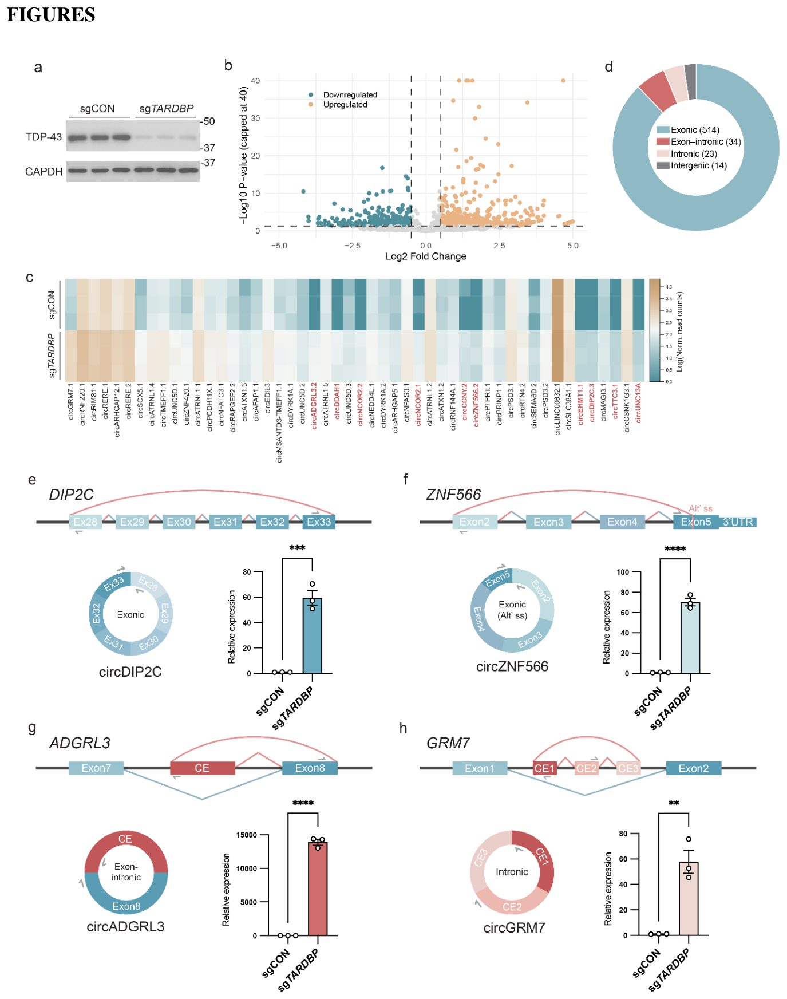
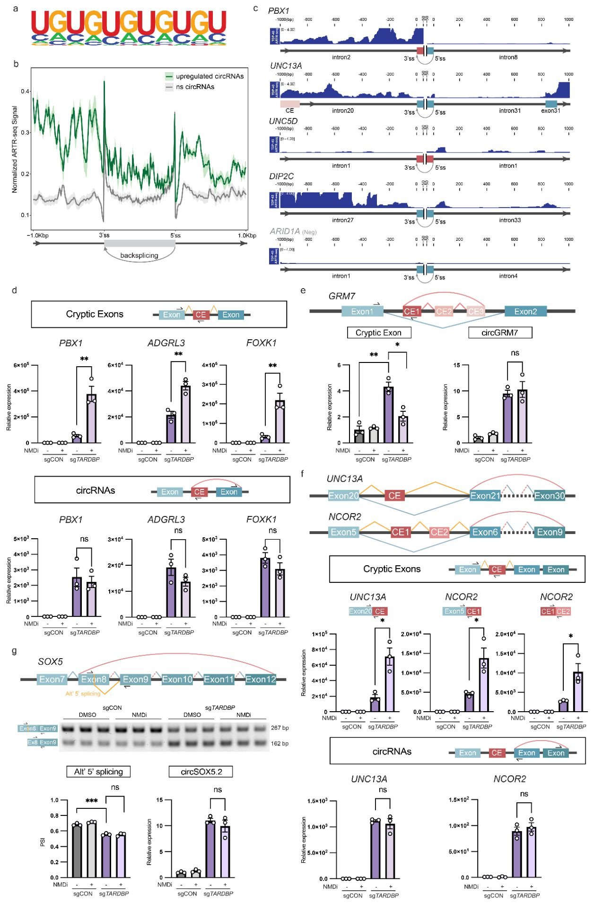
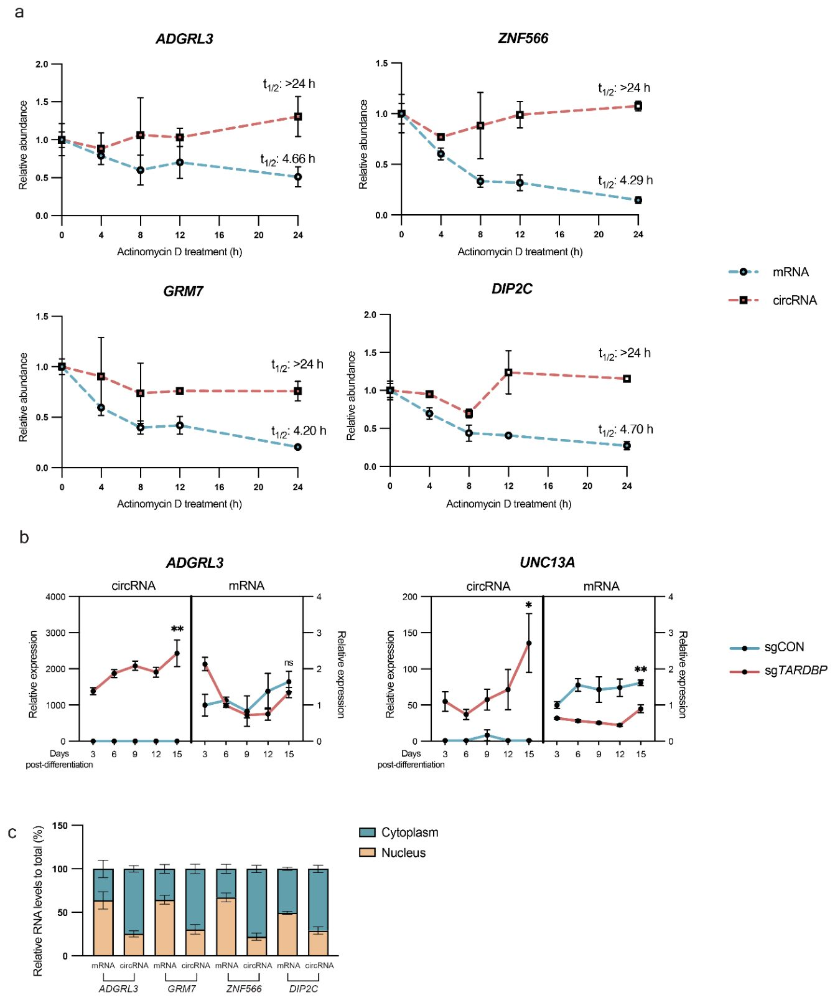
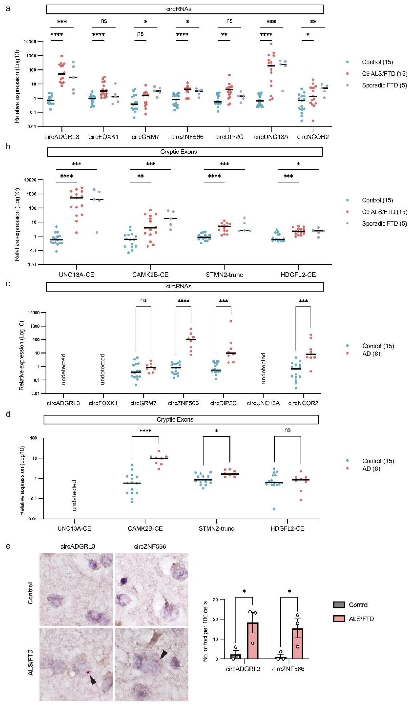
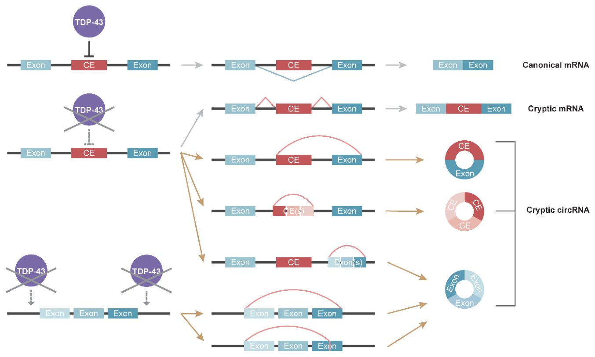

Сбой ключевого белка при деменции запускает аномальные кольцевые РНК
{kind=link}

При боковом амиотрофическом склерозе и лобно-височной деменции белок TDP-43 теряет свое нормальное положение в ядре клеток. Новое исследование показало, что этот сбой заставляет нейроны собирать необычные замкнутые молекулы РНК. Такие структуры отличаются повышенной стабильностью и накапливаются с возрастом. Их также находят в тканях мозга пациентов с болезнью Альцгеймера.
Главное
- Дефицит белка TDP-43 в нейронах запускает синтез особых криптических кольцевых РНК.
- Новые молекулы формируются из длинных интронов и обладают повышенной стабильностью.
- Подобные кольцевые РНК накапливаются в мозге пациентов при нейродегенеративных патологиях.
Подробнее
Белок TDP-43 в норме управляет сплайсингом (процессом созревания РНК), но при нейродегенеративных заболеваниях он исчезает из ядра нейронов. Авторы работы использовали дифференцированные человеческие нейроны (i3Neurons) с подавленной экспрессией TDP-43 методом CRISPRi, чтобы изучить судьбу кольцевых РНК (circRNA). С помощью секвенирования РНК после удаления линейных молекул и обработки ферментом RNase R ученые зафиксировали массовые изменения в пуле circRNA. В условиях дефицита TDP-43 активируются скрытые сайты сплайсинга внутри длинных интронов, что приводит к появлению уникальных кольцевых молекул с включением криптических экзонов.
Эти вновь возникшие криптические кольцевые РНК демонстрируют высокую устойчивость к деградации и накапливаются в клетках сильнее, чем их линейные аналоги. Анализ посмертных образцов мозга людей, страдавших боковым амиотрофическим склерозом, лобно-височной деменцией и болезнью Альцгеймера, подтвердил повышенный уровень таких молекул. Полученные данные указывают на то, что потеря функций TDP-43 нарушает базовую архитектонику РНК в нервной системе.
Ограничения
Работа выполнена на клеточных моделях in vitro и посмертных тканях мозга, что требует дальнейшего изучения причинно-следственных связей в живом организме.
Подробный разбор статьи
Резюме
Введение
Белок TDP-43, связывающий ДНК, является ключевым патологическим маркером бокового амиотрофического склероза (БАС) и лобно-височной деменции (ЛВД), выполняя при этом важную функцию регулятора сплайсинга РНК. Хотя дефицит TDP-43 хорошо изучен в контексте аберрантного сплайсинга линейных транскриптов, его влияние на биогенез кольцевых РНК (circRNA) оставалось неисследованным.
Важно
Истощение TDP-43 приводит к массовому появлению специфических криптических circRNA, которые накапливаются в нейронах из-за своей высокой стабильности.
Результаты
В данной работе продемонстрировано, что снижение уровня TDP-43 в нейронах человека вызывает масштабные изменения в профиле circRNA. В частности, наблюдается выраженная активация особого класса криптических circRNA, которые возникают исключительно при дефиците этого белка. Установлено, что некоторые из этих молекул включают в себя криптические экзоны, сформированные из интронных последовательностей. Характерной особенностью таких криптических circRNA является их повышенная стабильность по сравнению с соответствующими линейными изоформами РНК, что приводит к их постепенному накоплению в нейронах.
Пояснение
Криптические экзоны — это участки РНК, которые в норме являются «мусорными» интронами, но начинают считываться как кодирующие части гена при нарушениях механизмов сплайсинга.
Более того, повышенные уровни этих криптических circRNA были обнаружены в образцах тканей мозга, полученных посмертно от пациентов с БАС, ЛВД и болезнью Альцгеймера (БА). Полученные данные раскрывают ранее неизвестную функцию TDP-43 как супрессора формирования криптических circRNA и позволяют рассматривать эти молекулы в качестве стабильных биомаркеров дисфункции TDP-43.
Осторожно
Исследование основано на анализе нейронов человека и посмертных образцов тканей мозга, что требует дальнейшей проверки для установления прямого патогенетического вклада данных РНК в развитие нейродегенерации.
Введение
Общие патологические механизмы при нейродегенерации
Боковой амиотрофический склероз (БАС) и лобно-височная деменция (ЛВД) представляют собой нейродегенеративные заболевания, имеющие общие генетические и клинические характеристики. Ключевым признаком обеих патологий является протеинопатия TDP-43 (TAR DNA-binding protein 43 kDa), проявляющаяся в исчезновении белка из ядра и его накоплении в цитоплазме нейронов и глиальных клеток. Подобные нарушения TDP-43 встречаются и при других заболеваниях, включая болезнь Альцгеймера, болезнь Паркинсона, болезнь Гентингтона, LATE (лимбическую возрастную TDP-43-энцефалопатию) и рассеянный склероз.
Важно
Потеря функции TDP-43 в ядре является критическим событием, запускающим каскад нарушений РНК-метаболизма, что объединяет широкий спектр нейродегенеративных заболеваний.
Исследования показывают, что истощение ядерного пула TDP-43 предшествует образованию цитоплазматических агрегатов. В норме TDP-43 регулирует сплайсинг пре-мРНК, и его дефицит приводит к аберрантному сплайсингу: включению криптических экзонов (CE), удержанию интронов и пропуску экзонов. Помимо сплайсинга, TDP-43 участвует в альтернативном полиаденилировании, контроле стабильности мРНК и регуляции некодирующих РНК, включая микроРНК и ретротранспозоны. Дефекты процессинга РНК, вызванные потерей функции (LOF) TDP-43, лежат в основе дисфункции и гибели нейронов.
Пояснение
LOF (loss-of-function) — это состояние, при котором белок перестает выполнять свою нормальную биологическую задачу, что часто приводит к сбою в работе всей клеточной системы.
Роль TDP-43 в биогенезе циркулярных РНК
Циркулярные РНК (circРНК) — это ковалентно замкнутые молекулы, образующиеся в процессе обратного сплайсинга. Благодаря отсутствию свободных концов они устойчивы к экзонуклеазной деградации. Эти молекулы наиболее активно экспрессируются в нервной системе, участвуя в синаптической функции и развитии нейронов. Нарушение регуляции circРНК наблюдается при болезнях Альцгеймера и Паркинсона, однако механизмы этого процесса изучены недостаточно.
Поскольку биогенез circРНК тесно связан с каноническим сплайсингом и регулируется РНК-связывающими белками (RBP), способствующими образованию петель РНК, авторы предположили, что TDP-43, активно связывающийся с интронами, влияет на этот процесс. В данной работе доказано, что TDP-43 регулирует обратный сплайсинг. При его дефиците возникает специфический класс «криптических» circРНК, которые накапливаются в тканях пациентов с нейродегенерацией. Эти стабильные молекулы могут служить маркерами патологии, сохраняясь в клетке даже после деградации соответствующих линейных транскриптов.
Результаты
Утрата TDP-43 индуцирует криптические circRNA в i3-нейронах
Чтобы выяснить, влияет ли дефицит белка TDP-43 на экспрессию кольцевых РНК (circRNA) в нейронах, исследователи дифференцировали линию i3Neurons50, которые несли систему CRISPRi и экспрессировали sgRNA, нацеленную на ген TDP-43. Спустя 14 дней дифференцировки иммуноблоттинг подтвердил эффективное снижение уровня белка TDP-43 (Рис. 1a). Для анализа circRNA авторы провели секвенирование РНК (RNA-seq), предварительно удалив матричные мРНК с poly(A)+ хвостами, обработав образцы ферментом РНКаза R (RNase R) и истощив рибосомальную рРНК (см. Методы). Параллельно выполнили RNA-seq фракции без poly(A) для оценки экспрессии обычных линейных мРНК.
Пояснение
> CRISPRi — метод подавления активности конкретных генов без разрезания ДНК, а RNase R — фермент, избирательно разрушающий линейные молекулы РНК и позволяющий концентрировать кольцевые circRNA.
Анализ данных выявил масштабные изменения в количестве circRNA после истощения TDP-43 (Рис. 1b, Таблица S1). Примечательно, что эти сдвиги слабо коррелировали с изменениями уровня соответствующих линейных транскриптов (Рис. S1a), что указывает на независимость регуляции circRNA от транскрипции родительских генов. Хотя из одного гена может образовываться несколько изофорμών circRNA, авторы присвоили им номера на основе относительного обилия, но далее в тексте для удобства использовали названия исходных генов (номера изоформ приведены в Таблице S1). После потери TDP-43 наблюдалось преобладание усиления экспрессии (уподобления) circRNA над их подавлением (Рис. 1b, c). Особый интерес представляет подгруппа circRNA, которые в контрольных нейронах почти не определялись, а возникали de novo именно при дефиците TDP-43 (Рис. 1c, отмечены красным; Таблица S2).
Анализ транскриптомных особенностей и валидация
Изучая транскриптомные характеристики активированных circRNA, ученые проверили кандидатов с помощью расходящихся праймеров, охватывающих точки сшивания (back-splicing junctions). Большинство таких точек у индуцированных circRNA находилось между каноническими экзонами (Рис. 1d, Таблица S1). Многие из них присутствовали в контроле и резко возрастали при потере TDP-43 (например, circSOX5.1, circZNF420, circTMEFF1, circRIMS1 на Рис. S1b). Часть молекул обнаруживалась только в нейронах с нокдауном TDP-43: так, circDIP2C состоит из шести аннотированных экзонов, но точка сшивания экзона 33 с экзоном 28 появлялась исключительно после истощения TDP-43 (Рис. 1e). Другими подтвержденными примерами стали circUNC13A, circNCOR2, circDDAH1 и circCCNY (Рис. S1b).
Важно
> Потеря TDP-43 приводит к масштабному появлению новых кольцевых РНК (circRNA), среди которых выделяются молекулы de novo и гибридные структуры с участием криптических экзонов из длинных интронов.
Кроме того, были найдены circRNA, чьи точки сшивания задействовали альтернативные сайты сплайсинга внутри экзонов, как у circZNF566 и circSELENOT (внутри 5-го и 6-го экзонов соответственно; Рис. 1f, Рис. S1c). Интригующим открытием стало обнаружение новых точек сшивания, захватывающих границы экзон-интрон или расположенных целиком в интронах (Рис. 1d, Таблица S2). Эти события связаны с активацией криптических сайтов сплайсинга внутри интронов при дефиците TDP-43, которые участвуют в обратном сплайсинге с образованием circRNA, содержащих криптические экзоны (CE). Например, circADGRL3 содержит CE, замыкающийся в кольцо с нижележащим каноническим экзоном (Рис. 1g); к таким гибридным молекулам относятся также circPBX1, circFOXK1 и circZNF423 (Рис. S1d).
Часть circRNA состояла исключительно из криптических экзонов, образованных из депрессированных интронов. Так, circGRM7 формируется из трех соседних неаннотированных CE внутри одного интрона без канонических экзонов (Рис. 1h), а circDAPK1 включает два CE из интрона 2 (Рис. S1e). Молекулы circUNC5D возникают из кластера шести неаннотированных CE в интроне 1 с образованием разных изоформ (Рис. S1e). Важно отметить, что такие интронные криптические circRNA предпочтительно формировались из значительно более длинных интронов по сравнению с остальными интронами тех же генов (Рис. S1f). Полноразмерные нуклеотидные последовательности ряда circRNA были дополнительно подтверждены методом Сэнгера после клонирования в плазмиды (Таблица S3).
Осторожно
> Все эксперименты проведены на искусственной клеточной модели человеческих нейронов (i3Neurons50) с подавлением белка с помощью CRISPRi, что требует проверки полученных закономерностей на тканях человека ex vivo.
Подмножество криптических circRNA связано с аберрантным линейным сплайсингом при потере связывания TDP-43
Для изучения связи между повышением уровня circRNA и TDP-43 мы использовали метод ARTR-seq в i3-нейронах. Этот подход сочетает иммунопреципитацию РНК-связывающих белков (RBP) с обратной транскрипцией in situ, что позволяет картировать участки связывания белка с РНК (Рис. SN 2a-b). Анализ подтвердил, что TDP-43 преимущественно связывается с UG-богатыми мотивами в интронных областях, что согласуется с известными данными (Рис. 2a, Рис. SN 2b). Сравнение с данными eCLIP-seq в клетках K562 подтвердило специфичность метода (Рис. SN 2c). Важно отметить, что circRNA, уровень которых возрастал при деплеции TDP-43, демонстрировали повышенное связывание этого белка в интронах, фланкирующих сайты обратного сплайсинга (back-splice junctions), что наглядно показано для circPBX1, circUNC13A, circUNC5D.1 и circDIP2C (Рис. 2b, 2c).
{kind=link}

Важно
Повышение уровня circRNA при деплеции TDP-43 коррелирует с потерей связывания белка в прилегающих интронах, что указывает на регуляторную роль TDP-43 в подавлении этих сайтов.
Пояснение
ARTR-seq — метод картирования РНК, связанных с конкретным белком, путем встраивания меченных биотином нуклеотидов непосредственно в процессе обратной транскрипции.
Исследование связи между circRNA и аберрантным сплайсингом проводилось с учетом данных при ингибировании нонсенс-опосредованного распада (NMD). Из 569 upregulated circRNA 97 были связаны с аберрантными событиями сплайсинга (пропуск экзонов, включение криптических экзонов (CE)). Для circPBX1, circADGRL3 и circFOXK1, включающих CE, RT-qPCR показала, что потеря TDP-43 ведет к росту включения CE в линейные РНК, что усиливается при ингибировании NMD (Рис. 2d). Это подтверждает, что линейные РНК с CE быстро деградируют через NMD. Напротив, соответствующие circRNA были стабильны и не зависели от NMD, что указывает на их устойчивость к этому механизму контроля.
Осторожно
Исследование проводилось на i3-нейронах; результаты по NMD-зависимости линейных и кольцевых РНК могут различаться в других типах клеток.
В случаях circGRM7, содержащих интронные CE, линейные продукты были крайне редкими и не стабилизировались при ингибировании NMD, что говорит о преимущественном использовании криптических сайтов для образования circRNA, а не о деградации линейных изоформ. Также выявлены случаи, когда circRNA активируются без включения самого CE, например, circUNC13A и circNCOR2 (Рис. 2f). Здесь TDP-43 подавляет как использование криптических сайтов в линейных РНК, так и обратный сплайсинг. В то время как линейные РНК с CE подвергаются NMD-деградации, соответствующие circRNA сохраняют высокий уровень экспрессии, что доказывает координированную регуляцию этих процессов белком TDP-43.
Далее мы изучили, связаны ли другие типы аберрантного сплайсинга с дисрегуляцией circRNA. В транскрипте SOX5 истощение TDP-43 приводило к переключению на альтернативный 5′-сайт сплайсинга в экзоне 8, расположенный рядом с сайтом бэк-сплайсинга circSOX5.2, что давало изоформу с укороченным экзоном 8 (Рис. 2g). Метод RT-PCR подтвердил снижение уровня полноразмерного экзона 8 и рост укороченного при нокдауне TDP-43. В отличие от линейных транскриптов, содержащих CE (криптические экзоны), эта альтернативная изоформа не менялась при ингибировании NMD (Рис. 2g). Уровень circSOX5.2 также возрастал при истощении TDP-43 и не зависел от NMD, что подтверждает связь между выбором сайта сплайсинга и биогенезом circRNA, выходящую за рамки NMD-чувствительных CE.
Важно
Потеря функции TDP-43 вызывает сопряженные изменения в линейном и кольцевом сплайсинге, при этом криптические circRNA избегают деградации, характерной для линейных аналогов.
Эти данные показывают, что TDP-43 влияет на выбор сайтов сплайсинга, координируя регуляцию различных изоформ РНК. Хотя активация скрытых сайтов сплайсинга порождает как линейные, так и кольцевые аберрантные продукты, их судьба различна: линейные транскрипты часто подвергаются деградации через NMD, тогда как circRNA накапливаются, становясь устойчивыми маркерами дисфункции TDP-43.
Криптические circRNA обладают повышенной стабильностью и постепенно накапливаются в нейронах
Поскольку circRNA устойчивы к экзонуклеазной деградации, мы сравнили их стабильность с линейными транскриптами при нокдауне TDP-43, используя актиномицин D для остановки транскрипции. Линейные мРНК постепенно распадались, тогда как circRNA демонстрировали минимальный распад, подтверждая свою высокую стабильность (Рис. 3a).
{kind=link}

Пояснение
Актиномицин D — антибиотик, блокирующий синтез РНК, что позволяет измерить скорость распада существующих молекул (период полужизни).
Анализ динамики в дифференцирующихся нейронах показал, что уровни circADGRL3 и circUNC13A прогрессивно росли при постоянном нокдауне TDP-43, тогда как уровни соответствующих мРНК оставались стабильными (Рис. 3b, Рис. SN 3a). Фракционирование клеток, подтвержденное контрольными маркерами (Рис. SN 3b), показало, что circRNA преимущественно локализуются в цитоплазме, часто демонстрируя более выраженное цитоплазматическое обогащение, чем родительские мРНК (Рис. 3c).
Криптические circRNA повышены в тканях мозга человека с протеинопатией TDP-43 после смерти
Для оценки изменений circRNA, регулируемых TDP-43, при заболеваниях человека, авторы измерили уровень кандидатных circRNA в образцах височной коры постмортального мозга пациентов с БАС/ФДТ и неврологически здоровых контрольных лиц. В анализ вошли как случаи C9ORF72-БАС/ФДТ, так и спорадический ФДТ.
Анализ методом RT-qPCR выявил значительное повышение уровня кандидатных криптических circRNA, причем circADGRL3 и circUNC13A продемонстрировали наиболее выраженный рост как при C9ORF72-БАС/ФДТ, так и при спорадическом ФДТ по сравнению с контролем (Рис. 4a). Напротив, мРНК соответствующих хозяйских генов претерпевали лишь умеренные изменения или не менялись вовсе (Рис. S4a), что указывает на независимость роста circRNA от транскрипции исходных генов. Примечательно, что масштаб индукции circRNA был сопоставим, а в ряде случаев превосходил изменения известных линейных транскриптов с криптическими экзонами (CE), включая UNC13A, CAMK2B, STMN2 и HDGFL2 (Рис. 4b).
{kind=link}

Важно
Криптические circRNA (circADGRL3 и circUNC13A) резко повышаются при БАС/ФДТ, превосходя по уровню изменений многие известные линейные транскрипты.
Поскольку протеинопатия TDP-43 также встречается при болезни Альцгеймера (БА), исследователи изучили экспрессию целевых circRNA и их мРНК в той же зоне мозга пациентов с БА. В тканях при БА кольцевые РНК демонстрировали гораздо более выраженные сдвиги по сравнению с линейными мРНК (Рис. 4c, Рис. S4b), причем профили экспрессии отличались от БАС/ФДТ (Рис. 4a, c). Если circADGRL3 и circUNC13A сильно повышались при БАС/ФДТ (Рис. 4a), то в образцах БА они практически не определялись (Рис. 4c). И наоборот, circZNF566, circDIP2C и circNCOR2 сильнее повышались при БА, показывая слабые изменения или их отсутствие при БАС и ФДТ (Рис. 4a, c). Линейные транскрипты с CE также имели специфичные для болезней паттерны: CE UNC13A рос сильнее всего при БАС/ФДТ и не выявлялся при БА, а CE CAMK2B сильнее повышался при БА (Рис. 4b, d). Такие данные говорят о том, что нарушения сплайсинга из-за дисфункции TDP-43 имеют уникальные паттерны для разных нейродегенеративных заболеваний, хотя для подтверждения требуется анализ большего числа образцов.
Пояснение
RT-qPCR и BaseScope in situ — методы количественной оценки экспрессии РНК и визуализации молекул на уровне отдельных клеток в срезах тканей.
Авторы дополнительно подтвердили повышение криптических circRNA в ткани мозга человека с помощью гибридизации in situ методом BaseScope с зондами на сайты сшивания (back-splice junctions) circADGRL3 и circZNF566. В контроле сигналы почти отсутствовали, тогда как в мозге при БАС/ФДТ наблюдались четкие сигналы (Рис. 4e, стрелки). Подсчет показал значительное увеличение числа точек (puncta) для обоих целевых circRNA в больных образцах по сравнению с контролем (Рис. 4e), что дополнительно подтверждает надежный рост криптических circRNA при БАС/ФДТ.
Осторожно
Работа выполнена на постмортальных тканях человека, что отражает лишь конечные стадии патологии и требует осторожности в оценке причинно-следственных связей.
В совокупности эти результаты доказывают, что криптические circRNA повышены в тканях мозга человека с протеинопатией TDP-43 после смерти и демонстрируют специфичные для конкретных заболеваний паттерны экспрессии.
Обсуждение
Регуляция образования кольцевых РНК белком TDP-43
В данном исследовании была выявлена новая функция белка TDP-43, заключающаяся в контроле процесса обратного сплайсинга (back-splicing). Оказалось, что прекращение связывания TDP-43 приводит к формированию особой группы кольцевых РНК, получивших название криптических circRNA (cryptical circRNAs). Хотя роль TDP-43 в регуляции обычного линейного сплайсинга изучена хорошо, полученные результаты расширяют представления о его функциях, доказывая, что этот белок также ограничивает биогенез кольцевых РНК (Рис. 5). Таким образом, устанавливается прямая связь между протеинопатией TDP-43 и синтезом стабильных некодирующих молекул РНК.
{kind=link}

В норме белок TDP-43 фиксируется вблизи криптических сайтов сплайсинга и подавляет включение криптических экзонов (CE). При истощении или дисфункции TDP-43 эти участки начинают допускать аберрантный выбор сайтов сплайсинга, что вызывает встраивание CE в состав линейных матричных РНК. Часть таких активированных сайтов сплайсинга способна также подвергаться обратному сплайсингу, что приводит к появлению CE в структуре кольцевых РНК. Некоторые криптические circRNA включают как криптические, так и стандартные канонические экзоны, в то время как другие состоят исключительно из интронных криптических последовательностей. Подавляющая доля индуцированных circRNA образована стандартными каноническими экзонами. Часть таких кольцевых молекул формируется независимо от заметных сдвигов в соответствующих линейных транскриптах, тогда как другие связаны с процессами альтернативного сплайсинга в соседних участках. Некоторые из них фиксируются на базовом уровне и дополнительно возрастают при дефиците TDP-43, а другие возникают de novo сразу после потери белка. Все эти факты подтверждают, что TDP-43 подавляет образование кольцевых РНК как на криптических, так и на канонических экзонах.
Пояснение
Обратный сплайсинг (back-splicing) — это процесс формирования кольцевых РНК, в котором сайт сплайсинга на 3'-конце экзона соединяется с акцепторным сайтом на 5'-конце того же или вышележащего экзона в «обратном» направлении.
Факторы, определяющие усиление circRNA и выбор между кольцевым и линейным криптическим сплайсингом, пока остаются до конца неизученными. На эти процессы могут влиять такие параметры, как сила сайта сплайсинга, особенности интронной архитектуры, вторичная структура РНК, скорость транскрипции и привлечение дополнительных белков, связывающих РНК.
Молекулярная стабильность и потенциал криптических circRNA в качестве биомаркеров
Помимо особенностей своего синтеза, криптические circRNA обладают уникальными физико-химическими свойствами, обеспечивающими их высокую стабильность. Линейные изоформы с криптическими экзонами часто подвергаются деградации через механизм нонсенс-опосредованного распада (NMD) и родственные системы контроля качества РНК, что ограничивает их накопление в клетке. Напротив, криптические circRNA устойчивы к такому пути распада. В сочетании с природной защитой кольцевых молекул от экзонуклеазного разрушения эти особенности позволяют криптическим circRNA накапливаться и служить долговечными молекулярными индикаторами нарушений сплайсинга. Кроме того, известно свойство circRNA избирательно упаковываться во внеклеточные везикулы, включая экзосомы.
Важно
Потеря функции белка TDP-43 запускает образование стабильных криптических кольцевых РНК, которые не разрушаются системой NMD и могут накапливаться в клетках и внеклеточных везикулах в качестве надежных маркеров патологии.
Обнаружение криптических circRNA в посмертных образцах ткани мозга человека подтверждает их значимость при нейродегенеративных заболеваниях, связанных с патологией TDP-43. Были зафиксированы специфические для конкретных нозологий профили экспрессии: уровни circADGRL3 и circUNC13A заметно повышались при боковом амиотрофическом склерозе (БАС) и лобно-височной деменции (ЛВД), в то время как circZNF566, circDIP2C и circNCOR2 показывали более выраженный рост при болезни Альцгеймера (БА). Подобные различия могут отражать неоднородность распределения, сроки развития или влияние различных кофакторов патологии TDP-43 при разных заболеваниях, указывая на то, что определенные криптические circRNA способны отражать разные проявления дисфункции этого белка.
Осторожно
Данные получены на основе анализа посмертных тканей человека, поэтому для подтверждения диагностической ценности circRNA в качестве биомаркеров на ранних стадиях необходимы масштабные клинические исследования на образцах биологических жидкостей пациентов.
В совокупности эти данные расширяют представления о регуляции РНК, зависящей от TDP-43, включая в этот процесс обратный сплайсинг, и определяют криптические circRNA как устойчивые молекулярные последствия потери функции TDP-43 при нейродегенеративных процессах у человека.
Методы
Плазмиды
Для создания направляющих РНК (sgRNA) использовали вектор pU6-sgRNA EF1α-puro-T2A-BFP. Использовались следующие последовательности: контрольная (нецелевая) — GGACTAAGCGCAAGCACCTA и целевая для TDP-43 — GGCCCGCGCGTGCCAGCCGA.
Для валидации последовательностей кольцевых РНК (circRNA) применяли дивергентные праймеры (Таблица SN4) и амплификацию с помощью набора 2 × Phanta UniFi Master Mix в течение 32 циклов ПЦР. Продукты разделяли в 2,5% агарозном геле, вырезали полосы соответствующего размера и очищали. Полученные фрагменты клонировали в плазмиды с использованием набора Zero Blunt TOPO PCR Cloning Kit, после чего проводили секвенирование по Сэнгеру.
Пояснение
Секвенирование по Сэнгеру — это «золотой стандарт» определения нуклеотидной последовательности ДНК, позволяющий точно прочитать порядок оснований в конкретном фрагменте.
Культивирование и трансфекция клеток
Клетки HEK293T культивировали в среде DMEM с добавлением 10% фетальной бычьей сыворотки (FBS), пенициллина (100 Ед/мл) и стрептомицина (100 мкг/мл) при 37°C и 5% CO₂. Эти клетки использовали для упаковки лентивирусных конструкций с sgRNA по стандартным протоколам.
Индуцированные плюрипотентные стволовые клетки (иПСК) и нейроны
Дифференцировку иПСК в нейроны (i3Neurons) проводили через экспрессию dCas9 и индуцируемого доксициклином mNGN2. Клетки поддерживали на планшетах с Matrigel в среде Essential 8. Дифференцировку запускали в среде N2 с добавлением доксициклина в течение 3 дней, затем клетки переносили на планшеты с поли-L-орнитином в среду BrainPhys с добавлением B27, NT-3, BDNF, ламинина и доксициклина. Нейроны собирали на 14-й день.
Для экспериментов ARTR-seq использовали линию PiggyBac-TO-hNGN2. После трансфекции и селекции пуромицином клетки дифференцировали, добавляя 5-фтор-2'-дезоксиуридин и уридин для удаления пролиферирующих клеток. В среду BrainPhys дополнительно вносили GDNF (1 мкг/мл), сбор клеток проводили на 14-й день.
Обработка и анализ нейронов
Для ингибирования NMD нейроны обрабатывали 0,5 мкМ ингибитором hSMG1 в течение 24 часов (контроль — DMSO). Фракционирование на цитоплазматическую и ядерную части проводили в лизисном буфере NP-40. После центрифугирования при 3000 об/мин (4°C, 7 мин) супернатант использовали как цитоплазматическую фракцию, а ядерный осадок промывали трижды буфером с ЭДТА перед экстракцией РНК.
Пояснение
NMD (nonsense-mediated mRNA decay) — это механизм контроля качества клетки, который уничтожает дефектные молекулы мРНК, содержащие преждевременные стоп-кодоны.
Образцы тканей мозга человека
Замороженные и фиксированные (FFPE) ткани мозга получены из Johns Hopkins Brain Resource Center. Замороженные образцы (50 мг) гомогенизировали в буфере с ингибиторами протеаз и фосфатаз, после чего аликвоты использовали для выделения РНК.
Экстракция РНК, ОТ-ПЦР и ОТ-кПЦР
Общую РНК выделяли из культивируемых клеток и постмортальных тканей человека с применением реагента TRIzol согласно протоколу изготовителя. Синтез комплементарной ДНК осуществлялся с использованием набора HiScript III RT SuperMix for qPCR. Для экспериментов по оценке периода полураспада РНК, субклеточного фракционирования и накопления РНК в каждую нормализованную пробу РНК перед обратной транскрипцией добавляли равные количества внешнего контроля CLuc RNA spike-in, который в дальнейшем применялся в качестве внешней референсной точки для нормализации. Полуколичественная ПЦР проводилась с использованием смеси 2× Rapid Taq Master Mix в диапазоне 30–33 циклов амплификации для анализа изменений сплайсинга. Продукты ПЦР разделяли на 2,5% агарозных гелях и визуализировали на системе ChemiDoc Imaging System, а относительную интенсивность полос рассчитывали с вычитанием фонового сигнала в программе Image Lab.
Проценты включения экзонов рассчитывались на основе относительных интенсивностей длинной полноразмерной и короткой изоформовых полос ПЦР по формуле: PSI = long / (long + short). Количественная ПЦР в реальном времени выполнялась в технических дубликатах для каждого образца кДНК с помощью набора Taq Pro Universal SYBR qPCR Master Mix на приборах QuantStudio 6 и QuantStudio 3 Flex Real-Time PCR Systems. Относительные уровни экспрессии вычислялись методом ΔΔCt. В качестве генов сравнения использовали CLuc spike-in для тестов полураспада, фракционирования и накопления, GAPDH — для экспериментов по ингибированию NMD, а HPRT1 — для всех остальных анализов qPCR. Для целей с неопределенными значениями Ct присваивалось значение 40, соответствующее максимальному числу циклов амплификации. Последовательности праймеров приведены в Таблица S4.
Пояснение
Количественная ПЦР в реальном времени (qPCR) позволяет измерять количество конкретных молекул РНК с помощью флуоресцентных красителей, а метод ΔΔCt рассчитывает относительное изменение экспрессии генов по сравнению с контролем.
Измерение периода полураспада РНК
Нейроны i3Neurons обрабатывали актиномицином D в концентрации 3 µg/mL и собирали через 0, 4, 8, 12 и 24 часа в день 14. Общую РНК выделяли на каждой временной точке и анализировали методом RT-qPCR. Относительное содержание РНК нормировалось на нулевую точку для каждого транскрипта. Периоды полураспада транскриптов оценивались с помощью нелинейной регрессии на основе однофазной модели экспоненциального увядания в программе GraphPad Prism. Для линейных мРНК полураспада были успешно рассчитаны, в то время как для кольцевых РНК (circRNAs) уровень оставался практически неизменным на протяжении всего 24-часового периода наблюдения, из-за чего их периоды полураспада превышали 24 часа.
Подготовка библиотеки RNA-seq для анализа circRNA
Для каждого образца 5 µg общей РНК, выделенной из i3Neurons, использовалось для подготовки библиотеки, обогащенной кольцевыми РНК. Сначала мРНК с поли(A)+ выделяли с использованием модуля NEBNext Poly(A) mRNA Magnetic Isolation Module. Фракция poly(A)(-) собиралась как проток после выделения на олиги(dT)₂₅ бусинах и очищалась набором Quick-RNA Microprep Kit. Очищенная фракция обрабатывалась 5 ед. РНКазы R при 37 °C в течение 20 минут для обогащения круговыми РНК. После переваривания РНК восстанавливали с помощью TRIzol и измеряли на флуориметре Qubit. Для последующей работы 500 нг полученной поли(A)(-)/РНКаза R(+) РНК очищали от рРНК с помощью набора Ribo-off rRNA Depletion Kit.
Полученная обогащенная циркулярными РНК фракция немедленно использовалась для подготовки библиотеки секвенирования с использованием набора VAHTS Universal V10 RNA-seq Library Prep Kit for Illumina. Параллельно 50 нг соответствующей фракции поли(A)+ мРНК обрабатывалось для построения библиотеки тем же набором. Для каждой группы было подготовлено по 3 независимых биологических репликата. Библиотеки секвенировали на платформе Illumina NovaSeq X Plus с получением парных прочтений длиной 150 пар оснований.
Анализ RNA-seq: эталонный геном
В качестве референсного генома человека во всех анализах использовался GRCh38.p14 (Ensembl release 112) совместно с аннотацией генов GENCODE v32. Референсные последовательности для рибосомальных РНК, включая 28S, 18S, 5.8S и 5S рРНК, были загружены из базы данных Национального центра биотехнологической информации (NCBI).
Анализ экспрессии генов
Сырые прочтения поли(A)-библиотеки подвергались обрезке с помощью Cutadapt версии 5.06 со строгой фильтрацией по качеству при оценке Phred Score ≥ 33. Обработанные прочтения картировались с помощью HISAT2 версии 2.2.1, очищались от дубликатов с помощью Picard MarkDuplicates версии 3.3.0, а их количество подсчитывалось через FeatureCounts версии 2.0.8. Высокоэкспрессируемые гены с количеством прочтений ≥ 10 во всех образцах применялись для анализа дифференциальной экспрессии. Отфильтрованные прочтения нормализовались с помощью DESeq2 версии 1.46.0 с нормализацией по фактору размера.
Анализ дифференциальной экспрессии проводился с использованием значений Log2FoldChange и p-adjusted, причем пороги составляли /LFC/ ≥ 1 и скорректированное p < 0.05. Картированные прочтения визуализировались с помощью программы deepTools bamCoverage версии 3.5.6.
Пояснение
Пул прочтений фильтруется по качеству и картируется на эталонный геном, после чего пакет DESeq2 вычисляет статистически значимые изменения экспрессии генов между группами сравнения.
Детекция и анализ кольцевых РНК (circRNA)
Первичные прочтения из библиотек, истощенных по поли(А)-хвостам, обработанных RNase R и очищенных от рРНК, проходили процедуру тримминга через Cutadapt (v5.063) с фильтрацией по качеству (Phred Score ≥33). Для идентификации сайтов обратного сплайсинга (BSJ) применялся алгоритм CIRI2 с настройками по умолчанию. В анализ дифференциальной экспрессии включались только высокодостоверные circRNA, обнаруженные как минимум в 50% образцов с количеством BSJ ≥5. Нормализация данных выполнялась в пакете DESeq2 (v1.46.0) с использованием коэффициентов размера (size factors). Дифференциально экспрессирующимися считались гены с /LFC/ ≥0.5 и p < 0.05. Линейные криптические сайты внутри circRNA выявлялись с помощью LeafCutter (v0.2.9) на основе BAM-файлов.
Пояснение
CIRI2 — это специализированный биоинформатический инструмент для поиска кольцевых РНК, который использует характерные для них «обратные» сайты сплайсинга, где 3'-конец экзона соединяется с 5'-концом того же или вышестоящего экзона.
Анализ альтернативного сплайсинга
Использовались данные RNA-seq для нейронов i3Neurons (линии sgCON и sgTARDBP), полученные в условиях ингибирования и без ингибирования опосредованного нонсенс-мутациями распада мРНК (NMD). События альтернативного сплайсинга анализировались через rMATS (v4.3.0) с параметрами --novelSS, --variable-read-length, --individual-counts и парным дизайном (-t paired). Отбирались события с покрытием стыков ≥10, /ΔPSI/ ≥ 0.1 и FDR < 0.05. Интегральные значения PSI рассчитывались как максимальные показатели для контрольных условий (max_PSI_control) и условий с дефицитом TDP-43 при подавлении NMD (max_PSI_TDP_NMD).
Дифференциальный сплайсинг определялся как dPSI_TDPvsCTRL. События с /ΔPSI/ > 0.1 классифицировались как усиление или ослабление включения экзонов. События, отсутствующие в группе sgTDP, маркировались как «NMD». С помощью BEDTools проводилось пересечение координат событий сплайсинга с сайтами обратного сплайсинга circRNA, при этом учитывались только точные совпадения границ сайтов сплайсинга.
Подготовка библиотек ARTR-seq
Метод ARTR-seq выполнялся с модификациями. Клетки фиксировались 1.5% параформальдегидом (10 мин), обрабатывались 125 мМ глицином (1 мин), пермеабилизировались 0.5% Triton X-100 на льду (10 мин) и блокировались 0.1% БСА с ингибитором РНКаз. Мишень TDP-43 выявлялась антителами (Abnova, клон 2E2-D3, 1:500) с последующей инкубацией со вторичными антителами Alexa Fluor 546 и pAG-RTase. Для контроля часть ядер окрашивалась Hoechst. Обратная транскрипция проводилась in situ с использованием адаптер-RT праймера и нуклеотидной смеси с биотин-16-dUTP и биотин-16-dCTP. После остановки реакции (20 мМ ЭДТА, 10 мМ ЭГТА) и обработки протеиназой K, кДНК выделялась фенол-хлороформной экстракцией и осаждением этанолом. После обработки РНКазами H, A и T1 биотилированная кДНК обогащалась на стрептавидиновых магнитных частицах. После лигирования 3'-адаптера библиотеки амплифицировались ПЦР и очищались в геле (фракция 180–300 п.н.). Секвенирование проводилось на Illumina NovaSeq 6000 (парные прочтения 150 п.н.) в трех биологических повторах.
Анализ ARTR-seq
Первичная обработка ридов включала обрезку адаптерных последовательностей с помощью Cutadapt (версия 5.063) с использованием параметров: --nextseq-trim=20, --action=trim, -m 20, -e 0.15, -n 3, -O 5, а также специфических последовательностей адаптеров. Уникальные молекулярные идентификаторы (UMI) длиной 8 нуклеотидов, расположенные на 5′-конце R1 и 3′-конце R2, были удалены, а последовательность UMI из R1 была добавлена к названию рида для последующей дедупликации. Для минимизации ошибок картирования, вызванных несовершенством парных последовательностей в случайных праймерах, с 3′- и 5′-концов R1 и R2 дополнительно удалялись по 4 нуклеотида.
Пояснение
UMI (уникальный молекулярный идентификатор) — это короткая последовательность нуклеотидов, которая позволяет пометить каждую исходную молекулу РНК или ДНК перед амплификацией, что помогает отличить истинные биологические копии от дубликатов, возникших при ПЦР.
Очистка от рибосомальной РНК проводилась путем картирования ридов на соответствующие последовательности rRNA с помощью Bowtie2 (v.2.4.4) при --seedlen=15; картированные риды исключались из дальнейшего анализа. Оставшиеся риды картировались на геном с помощью STAR (v2.7.11b) с настройками --alignEndsType EndToEnd, --outFilterMatchNmin 20, --alignMatesGapMax 15000 и другими параметрами для обеспечения высокой точности. Уникально картированные риды подвергались дедупликации с помощью UMICollapse (параметры: -t 2, -T 16, --paired, --merge avgqual). Визуализация данных осуществлялась путем конвертации BAM-файлов в формат bigWig через deepTools (v.3.5.5) с нормализацией по глубине секвенирования (--normalizeUsing BPM). Профили ARTR-seq рассчитывались через computeMatrix и визуализировались с помощью R-скриптов и библиотеки ggplot2.
Для поиска пиков (peak calling) риды разделялись по цепям (положительная и отрицательная), конвертировались в формат BED и обрабатывались программой MACS3. Использовались параметры по умолчанию с добавлением --keep-dup -p BEDPE. Программа оценивала обогащение сигнала (fold enrichment) и P-значение на основе распределения Пуассона с коррекцией Бенджамини-Хохберга для множественных сравнений. Пики для каждой цепи определялись отдельно с использованием соответствующих входных библиотек в качестве фона, после чего файлы объединялись.
Экстракция белков и иммуноблоттинг
Клетки i3Neurons промывали DPBS, собирали центрифугированием и лизировали в буфере RIPA с добавлением коктейля ингибиторов протеаз. После инкубации на льду в течение 20 минут и центрифугирования (12 000 × g, 20 минут, 4°C) супернатант отбирали для определения концентрации белка методом BCA. Пробы (по 5 мкг белка) смешивали с 5× буфером для нанесения, прогревали при 90°C в течение 2 минут и разделяли методом SDS-PAGE (10% гель).
Белки переносили на нитроцеллюлозную мембрану методом «мокрого» переноса. Блокировку проводили в 5% обезжиренном молоке на TBST в течение 1 часа. Инкубацию с первичными антителами (anti-TDP-43, 1:1000; anti-GAPDH, 1:1000) проводили в 5% BSA в течение ночи при 4°C. На следующий день мембраны промывали 1× TBST и инкубировали со вторичными антителами (1:10 000) в течение 1 часа при комнатной температуре. Сигнал детектировали с помощью реагентов ECL и системы Bio-Rad ChemiDoc.
Анализ методом BaseScope
Для детекции circADGRL3 и circZNF566 применяли систему BaseScope v2 Detection Reagent Kit–RED. Были разработаны специфические зонды типа 1ZZ, нацеленные на последовательности обратного сплайсинга (back-splice junction) данных кольцевых РНК. В работе использовали срезы постмортальной ткани головного мозга человека, зафиксированные в формалине и залитые в парафин (FFPE). Подготовка включала депарафинизацию в ксилоле и регидратацию в спиртах с возрастающей концентрацией. Ткани обрабатывали перекисью водорода, после чего проводили демаскировку антигенов (target retrieval) в специальном реагенте при температуре ~99 °C в течение 15 минут. Для пермеабилизации образцы инкубировали с протеазой Protease III в течение 30 минут при комнатной температуре.
Пояснение
Метод BaseScope — это высокочувствительная разновидность гибридизации in situ, позволяющая визуализировать отдельные молекулы РНК, включая их специфические формы, такие как кольцевые РНК, за счет использования коротких олигонуклеотидных зондов.
Гибридизацию целевых и контрольных (положительных и отрицательных) зондов проводили при 40 °C в течение 2 часов в увлажненной камере. Последовательная амплификация сигнала (стадии AMP1–AMP8) завершалась окрашиванием хромогенным субстратом Fast RED. Срезы докрашивали гематоксилином и заключали под покровное стекло с использованием среды VectaMount. Визуализацию проводили на светлопольном микроскопе при увеличении 60×, где каждая молекула РНК выглядела как отдельный красный фокус.
Количественный анализ выполняли минимум по 10 полям зрения на срез, подсчитывая не менее 100 клеток. Общее число клеток определяли по окраске ядер, при этом клетки с мелкими гиперхромными ядрами, характерными для глии, исключали из анализа. Итоговое количество красных фокусов нормировали на общее число нейронов. Все этапы получения изображений и подсчета проводились в слепом режиме.
Статистический анализ
Для обработки данных и оценки статистической значимости применялись пакеты GraphPad Prism и RStudio. Пороговым значением для статистической значимости считался уровень p < 0,05. Уровни значимости обозначались как *P < 0,05, P < 0,01, *P < 0,001 и ****P < 0,0001. В качестве контроля нагрузки при анализе белковых образцов использовался GAPDH. Все эксперименты проводились с использованием n=3 биологических повторностей.
Пояснение
Биологическая повторность (biological replicate) — это независимые образцы, полученные из разных биологических источников (например, разных культур клеток или разных животных), что позволяет оценить воспроизводимость эффекта.
Анализ секвенирования РНК (RNA-seq), обогащенной циркулярными РНК (circRNA), выявил 7689 транскриптов. После фильтрации по критериям /LFC/ ≥ 0,5 и p < 0,05 было идентифицировано 585 upregulated (повышенная экспрессия) и 379 downregulated (пониженная экспрессия) circRNA при истощении TDP-43 (Рис. b). Данные визуализированы на вулканической диаграмме, где значения -log10(p-value) выше 40 ограничены верхним пределом. Тепловая карта (Рис. c) демонстрирует топ-50 наиболее экспрессируемых circRNA, ранжированных по скорректированному P-значению; для генов-хозяев с несколькими изоформами circRNA нумерация присвоена от высокой к низкой представленности. Красным цветом отмечены de novo circRNA, которые имели нулевой уровень экспрессии в контрольных образцах (sgCON).
Для валидации результатов RT-qPCR проводилась на тотальной РНК без обогащения circRNA (Рис. e–h). Статистическая значимость для этих данных рассчитывалась с помощью двустороннего непарного t-теста. В исследованиях тканей височной коры (контроль, ALS/FTD, спорадическая FTD и AD) значимость определялась с помощью двустороннего теста Манна-Уитни. В экспериментах BaseScope (in situ гибридизация) для circADGRL3 и circZNF566 (Рис. e) количество позитивных сигналов на 100 клеток оценивалось для каждой группы (n=3 донора) с использованием t-теста.
Схема исследования
Препринт не прошёл рецензирование. Выводы предварительные.
Источник
| Категория | Лицензия препринта |
|---|---|
| neuroscience | все права у авторов |
Источники
| Источник | Ссылка |
|---|---|
| Страница препринта | biorxiv.org |
| Полный текст (PDF) | biorxiv.org |
| DOI | doi.org |
| Метаданные Crossref | api.crossref.org |
| Europe PMC | europepmc.org |
| Иллюстрация | commons.wikimedia.org.jpg) |